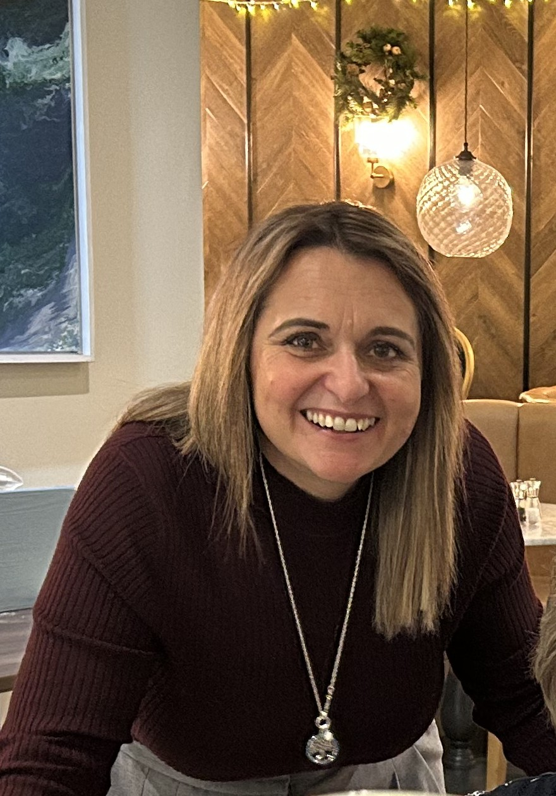

Hi, I’m Michelle
I’ve been a qualified counsellor for over ten years and a Play Therapist since 2019.
My career has been shaped by more than two decades working within specialist SEN provisions,
where I’ve supported children and young people with a wide range of emotional, developmental,
and sensory needs. Alongside this, I have supported staff teams with the emotional impact of
such a demanding and often deeply affecting role, helping them reflect, regulate, and stay
grounded in their work.
As part of my counselling training, I completed my clinical hours with Mind and Penhaligon’s Friends,
gaining experience with adults, children, and families navigating a wide range of emotional challenges,
grief, and life transitions.
I’m Cornish, and I feel incredibly fortunate to live and work in a place where nature is always close by.
Some of the most powerful sessions happen when I can walk alongside someone — literally and emotionally —
creating space for connection, grounding, and honest reflection.
Counselling Qualifications
-
Level 2 Certificate in Counselling Skills
Foundational training in core counselling skills, ethical practice, and reflective listening.
-
Level 3 Certificate in Counselling Studies
Further development of counselling theory, the therapeutic relationship, and professional practice.
-
Level 4 Diploma in Therapeutic Counselling (QCF)
A full professional counselling qualification (120 credits), covering ethical frameworks, diversity,
theory integration, and in‑depth reflective work.
Play Therapy Qualifications
-
Postgraduate Certificate in Therapeutic Play Skills
Training in child‑centred therapeutic play approaches and creative expression.
-
Postgraduate Diploma in Practice‑Based Play Therapy
Accredited by PTUK/PTI and Leeds Beckett University, including clinical practice and creative arts therapies.
-
Postgraduate Diploma in Play Therapy (Distinction)
Advanced training in therapeutic play, trauma‑informed practice, emotional development,
and creative therapeutic methods.
Additional Training and Experience
Bereavement and Loss
Specialist training with Penhaligon’s Friends, supporting children, young people, and families
through grief and loss.
Suicide First Aid
Certified in Suicide First Aid, enabling safe, compassionate, and informed responses to individuals
experiencing suicidal thoughts or crisis.
Mental Health Professional Background
- Former Senior Mental Health Worker supporting individuals with complex emotional and psychological needs.
- Experienced Mental Health Trainer delivering sessions on wellbeing, emotional resilience, and mental health awareness to professionals and community groups.
- Support for staff teams working in emotionally demanding environments.
Safeguarding Experience
Previous Safeguarding Lead responsible for safe practice, risk management, and the protection of vulnerable
children, young people, and adults.